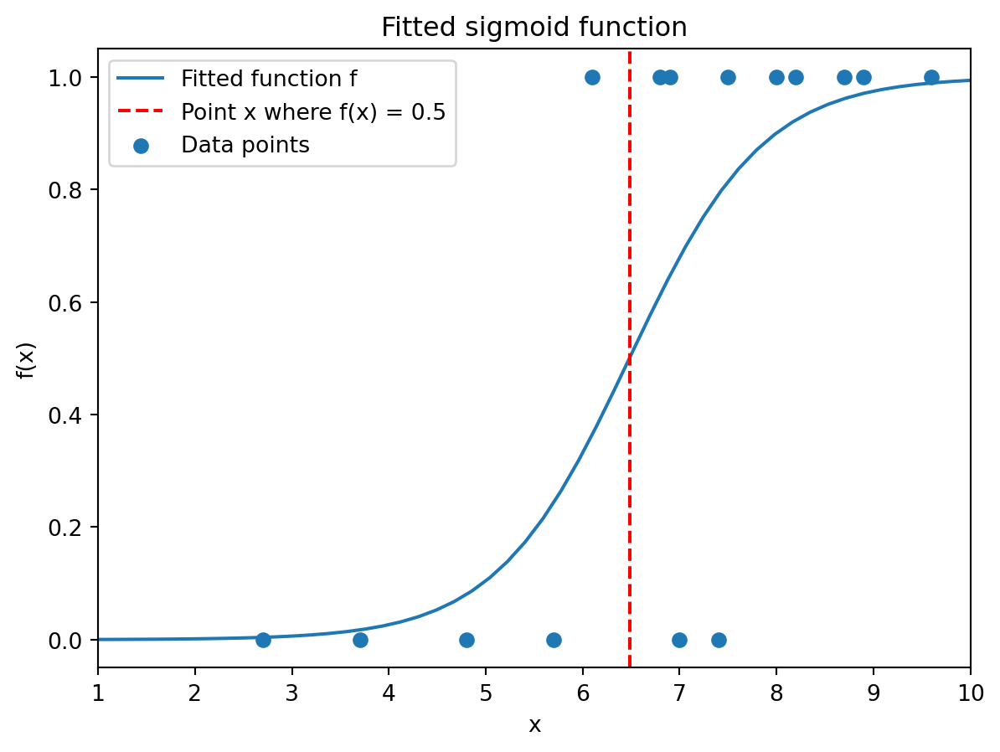

import numpy as np
import matplotlib.pyplot as plt
# Grades
x_data = np.array([2.7, 3.7, 4.8, 5.7, 6.1, 6.8, 6.9,
7.0, 7.4, 7.5, 8, 8.2, 8.7, 8.9, 9.6])
# Promotion decisions (binary label)
y_data = np.array([0, 0, 0, 0, 1, 1, 1, 0,
0, 1, 1, 1, 1, 1, 1])
# Create figure
plt.figure()
# Scatter data points
plt.scatter(x_data,y_data)
# Add labels and axis information
plt.xlim(1,10)
plt.xlabel('Grade x')
plt.ylabel('Promotion decision');
# Add title
plt.title("Historical data")
# Show plot
plt.show()10 Learning problems
In this chapter, we will see some algorithms for learning problems such as classification and clustering, which are fundamental tasks in machine learning for the analysis of large data sets. We remark that some of the problems we have seen in earlier chapters, such as regression, can also be seen as learning problems.
Classification is concerned with deciding for every data point (or observation) what label or category, from a pre-determined list, it belongs to. Think of (binary) tasks like determining whether an e-mail is spam or not, or deciding whether an employee should get a promotion. Classification is an example of a supervised learning problem.
Clustering is concerned with grouping similar data points in clusters. Here there is not (necessarily) an underlying “ground truth” label for every cluster. The goal is merely to group similar points together. Clustering is an example of an unsupervised learning problem.
One very useful package for machine learning in Python is the Scikit-learn package sklearn that builds on NumPy, SciPy and Matplotlib. If you will be doing machine learning with Python in the future, this package is a good starting point. In this chapter, we will illustrate some functionality sklearn.
10.1 Binary logistic regression
Consider the problem of deciding whether an employee should get promoted, based on an overall grade x \in [1,10] representing their performance. The high-level idea is to come up with a non-decreasing function f : [1,10] \rightarrow [0,1] indicating whether, given a grade x, an employee should get a promotion. You may interpret f(x) as the probability that, given grade x, an employee gets promoted.
We promote an employee with grade x if and only if f(x) > 0.5. More formally, we define the classifier function g: [1,10] \rightarrow \{0,1\} by g(x) = \left\{ \begin{array}{ll} 1 & f(x) > 0.5 \\ 0 & f(x) \leq 0.5 \end{array} \right..
We say that an employee with grade x_i has label 1, or is in class 1, if g(x_i) = 1, and label/class 0 if g(x_i) = 0.
10.1.1 Input data
The idea will be to fit a function f on (historical) data, and thereby indirectly also the function g. The historical data points are given as (x_i,y_i) for i = 0,\dots,m-1, where x_i \in [1,10] is the grade of person i for i = 0,\dots,m-1 together with the decision y_i \in \{0,1\} whether a person with that grade got promoted (label 1) or not (label 0).
The purpose of fitting such a function is that we can use it to make promotion decision in the future, i.e., if a new employee x_m is up for promotation, we use the fitted function g to decide whether this person gets promoted or not.
10.1.2 Classification model
The idea of logistic regression is to look for a sigmoid function f that is of the form f(x) = \frac{1}{1 + e^{-p(x)}} with p(x) = \alpha + \beta\cdot x an affine function. The goal is to fit, or “learn” in machine learning terminology, the weights \alpha and \beta based on the historical data. Such a function f is more appropriate than, for example, an affine function f, when solving this type of classification problem.
Below we plot an example of such a function for \alpha = -5, \beta = 1.
Show code generating the plot below
# An example of a sigmoid function
def sigmoid(x,alpha,beta):
return 1/(1 + np.exp(-(alpha + beta*x)))
# Choice of beta for plot
alpha, beta = -5, 1
# Arrays to plot
x = np.linspace(1,10)
y = sigmoid(x,alpha,beta)
# Create figure
plt.figure()
# Plot function
plt.plot(x,y)
# Add labels and axis information
plt.xlim(1,10)
plt.xlabel('x')
plt.ylabel('f(x)');
# Add title
plt.title("Example of sigmoid function")
# Show plot
plt.show()We next import the logistic regression class LogisticRegression from the sklearn.linear_model module to do the fitting with, and create an instance of this class.
from sklearn.linear_model import LogisticRegression
# Create instance/object of class
promotion = LogisticRegression(penalty=None)When creating the instance, we add the keyword argument penalty which we set to None. As a default, LogisticRegression uses a regularization term (as we saw in the exercises corresponding to the previous chapter) in the minimization problem to find the best fit.
By setting penalty=None, this regularization term will be set to zero when we do the fitting later on. There are also other conditions you can impose on the fitting procudure; have a look at the documentation for these.
We continue with the fit() method that is used to do the fitting. As can be seen in the documentation (figure below), the input data of the x-array should be a two-dimensional array where every column represents one feature of the data. In our setting, there is only one feature, the grade of an employee. Another feature could for example be the number of years that someone has been working for the company already.
fit() function for LogisticRegression instance# Historical data (with x_data as n x 1 column array)
x_data = np.array([2.7, 3.7, 4.8, 5.7, 6.1, 6.8, 6.9,
7.0, 7.4, 7.5, 8, 8.2, 8.7, 8.9, 9.6])[:,None]
y_data = np.array([0, 0, 0, 0, 1, 1, 1, 0,
0, 1, 1, 1, 1, 1, 1])
# Fit the instance with historical data
promotion = promotion.fit(x_data,y_data)The fitted model has various attributes with information about the fitted model.
classes_: Distinct labels that appear in label arrayy_data.
# Distinct labels in y-data
print("Classes = ", promotion.classes_)Classes = [0 1]# Fitted parameters
print("alpha = ", promotion.intercept_[0])
print("beta = ", promotion.coef_[0,0])alpha = -9.403012405877018
beta = 1.4505735782392242intercept_: Fitted coefficient \alpha (in one-dimensional array)coef_: Fitted coefficient \beta (in two-dimensional array)
Note that intercept_ and coef_ return a one- and two-dimensional array, respectively. This is because, in general, we can also fit models with c \geq 2 classes and n data features, meaning x_i \in \mathbb{R}^n. Then intercept_ is an array of length c-1 and coef_ a (c-1) \times n array.
Next to the attributes, there are also various function that we can execute on the fitted model.
predict_proba(): Returns array P whose rows correspond to the observations, and whose columns to the classes. Entry P_{ij} is the probability that observation x_i is in class j.
In our example, the first column is the value 1 - f(x_i), i.e., the probability of being in class 0, and the second column is the value f(x_i), i.e., the probability of being in class 1.
# Class prediction probabilities
P = promotion.predict_proba(x_data)
print(P)[[0.99587462 0.00412538]
[0.98263686 0.01736314]
[0.9198462 0.0801538 ]
[0.75671314 0.24328686]
[0.63518214 0.36481786]
[0.3867752 0.6132248 ]
[0.35298469 0.64701531]
[0.32060287 0.67939713]
[0.20895564 0.79104436]
[0.18598853 0.81401147]
[0.09960903 0.90039097]
[0.07644273 0.92355727]
[0.0385318 0.9614682 ]
[0.0291111 0.9708889 ]
[0.01074519 0.98925481]]predict(): Gives predicted class of every observation. For us it returns 1 if the predicted probability > 0.5, and 0 otherwise. This is the implementation of the function g that we introduced earlier.
# Class predictions
y_pred = promotion.predict(x_data)
print("Predicted classes are",y_pred)
print("Original classes are ",y_data)Predicted classes are [0 0 0 0 0 1 1 1 1 1 1 1 1 1 1]
Original classes are [0 0 0 0 1 1 1 0 0 1 1 1 1 1 1]score(): Computes the fraction of correctly classified data points, i.e, the points (x_i,y_i) for which their predicted label is the same as their true label y_i.
# Model score
score = promotion.score(x_data,y_data)
print(score)0.810.1.3 Visualization
We can plot the fitted sigmoid function with the observations. We have added a dashed red line at the x for which f(x) = 0.5. This is the boundary between values of x whose predicted label is 0 (left of the line) and whose predicted label is 1 (right of the line).
As you can see, three points are misclassified: One points receives predicted label 0 although its true label is 1, and two points receive predicted label 1 although their true label is 0.
Show code generating the plot below
import scipy.optimize as optimize
# An example of a sigmoid function
def sigmoid(x,alpha,beta):
return 1/(1 + np.exp(-(alpha + beta*x)))
# Choice of beta for plot
alpha, beta = promotion.intercept_, promotion.coef_[0]
# Determine x where f(x) = 0.5
def g(x,alpha,beta):
return sigmoid(x,alpha,beta) - 0.5
x_b = optimize.fsolve(g,x0=5.5,args=(alpha,beta))
# Arrays to plot
x = np.linspace(1,10)
y = sigmoid(x,alpha,beta)
# Create figure
plt.figure()
# Plot fitted sigmoid function
plt.plot(x,y,label="Fitted function f")
# Plot vertical line at x_b
plt.axvline(x_b,linestyle='--',color='red',label="Point x where f(x) = 0.5")
# Scatter data points
plt.scatter(x_data,y_data,label="Data points")
# Add labels and axis information
plt.xlim(1,10)
plt.xlabel('x')
plt.ylabel('f(x)');
# Add title
plt.title("Fitted sigmoid function")
# Add legend
plt.legend()
# Show plot
plt.show()
It is also possible to visualize the number of correctly and wronlgy classified points using the confusion matrix() function from the sklearn.metrics package. If the first input argument of this function is the array with the true labels, and the second input argument the array with the predicted labels, then heatmap() returns a matrix C where entry C_{ij} is the number of observations whose true label is i, but was predicted to have label j.
This means that the sum of the diagonal entries of this matrix is the correctly classified observations.
from sklearn.metrics import confusion_matrix
# Inputs are true labels and predicted labels
C = confusion_matrix(y_data,y_pred)
print(C)[[4 2]
[1 8]]You can also represent this matrix visually using the heatmap() function from the Seaborn package. You do not need to know this package, but we include it here for completeness. It contains functionality for visualization of statistical data.
Show code generating the plot below
import seaborn
seaborn.heatmap(C,annot=True,cmap='Blues_r')
plt.xlabel('Predicted class')
plt.ylabel('True class');10.2 Clustering
Another fundamental problem in the area of machine learning and computer science is that of clustering. Here the task is to divide (unlabelled) data points x_0,\dots,x_{n-1} \in \mathbb{R}^d with x_i = [x_{i0},\dots,x_{i(d-1)}] having d features, into groups/clusters that are ‘similar’ in a certain sense. An example is customer segmentation, where you want to have a similar advertisement policy for similar customers, and so you need to decide how to segment the customers (although a priori it is not clear what makes customers similar).
The high-level idea of many clustering algoritms is to come up with K centers c_0,\dots,c_{K-1} \in \mathbb{R}^d with c_k = [c_{k0},\dots,c_{k(d-1)}] for k = 0,\dots,K-1, and assign every point x_i to a center. All the points assigned to the same center are called a cluster. The index of the cluster that a data point x_i is assigned to, is called its label. The goal is to find the appropriate centers and an assignment from points to clusters.
The quality of a clustering C = \{c_0,\dots,c_{K-1}\} is often measured in terms of the sum of squared errors (SSE)
\begin{array}{ll} \displaystyle \text{SSE}_{x_0,\dots,x_{n-1}}(c_1,\dots,c_k) & = \displaystyle \sum_{i=0}^{n-1} \min_{k=0,\dots,K-1} ||x_i - c_k||_2^2 \\ & = \displaystyle \sum_{i=1}^{n-1} \min_{k=0,\dots,K-1} \sum_{j=0}^{d-1} (x_{ij} - c_{kj})^2 \end{array}
which aggregates the squared L^2-norm distances of all data points to their closest center.
10.2.1 Input data
Below we generate some data that we will cluster later on in this section. The data is generated using a built-in data generation function from the sklearn.datasets module. This module contains many functions to generate so-called synthetic data. You do not need to know the function make_blobs, but we include it here for completeness. Have a look at its documentation if you are interested.
The function make_blobs can take as input specified centers, and then randomly generate data points around every center (based on normally distributed randomness). Those data points have as “true” label the index of the corresponding center they were generated around.
Most importantly, using make_blobs we create an
- n \times d array
x_datawhere every row is a data point x_i \in \mathbb{R}^d with d = 2; - n-dimensional array
x_clusterwith the cluster every data point was generated in.
from sklearn.datasets import make_blobs
# Define K = 4 centers
r = 5
chosen_centers = np.array([[-r,-r],[-r,r],[r,r],[r,-r]])
# Creates n = 200 data points with four clusters of size n/K = 50
x_data, x_cluster = make_blobs(
n_samples=200, # n = 200
n_features=2, # d = 2
centers=chosen_centers,
cluster_std=2.5, # Set std of generated cluster points
random_state=32, # Fix randomness
)
# First three rows of x_data
print("First three data points: \n", x_data[0:3], "\n")
# Clusters of first three data points
print("Labels of first three data points: \n", x_cluster[0:3], "\n")First three data points:
[[ 6.25214191 -1.46808492]
[-9.46978032 -7.12935057]
[-6.31577839 -6.69882724]]
Labels of first three data points:
[3 0 0]
We can also visualize the data in a scatter plot using indexing. This plot will be explained later on.
Show code generating the plot below
import matplotlib.pyplot as plt
# Define parameters based on data arrays
K, d = np.shape(chosen_centers)
# Create figure()
plt.figure()
# Scatter points per cluster
for k in range(K):
mask = (x_cluster == k) # Determine rows with label k
# Plot x- against y-coordinate of points in R^2
plt.scatter(x_data[mask,0],x_data[mask,1],label=f"Cluster {k}")
# Plot chosen centers
plt.scatter(chosen_centers[:,0], chosen_centers[:,1],
linewidth=6, label="Centers", color='black')
# Create legend
plt.legend()
# Show plot
plt.show()10.2.2 Clustering algorithm
Next assume that only the data points x_0,\dots,x_{n-1} \in \mathbb{R}^d are given to us, and our goal will be to compute centers and assign every data point to a cluster. We will do this using the K-means algorithm.
The K-means algorithm starts with initially chosen centers c_0,\dots,c_{K-1} and carries out the following two steps for T \in \mathbb{N} iterations:
- Assign every data point x_i to its closest (in Euclidean distance) center from the set \{c_0,\dots,c_{K-1}\}, i.e., give x_i label L_i = \text{argmin}_{k = 0,\dots,K-1} ||x_i - c_k||_2
- For k = 0,\dots,K-1, let G_k = \{i : L_i = k\} and compute new centers \hat{c}_k by the formula \hat{c}_k = \frac{1}{|G_k|} \sum_{i \in G_k} x_i. That is, the new center is the average of all points that are assigned the same label in Step 1. Set c_j \leftarrow \hat{c}_j and go back to Step 1.
This procedure has been implemented in Python in the KMeans class of the sklearn.cluster module. We first import and create an instance of this class. Below we explain the input keyword arguments.
from sklearn.cluster import KMeans
kmeans = KMeans(
n_clusters=4, # Our parameter K
init="random", # Choose initial clusters randomly from data points
random_state=42, # Fix randomness
n_init=5, # Number of runs of algorithm with initial clusters
max_iter=300, # Our parameter T
)When creating an instance, we specify
n_clusters: Number of clusters/centers; this is our value K.init: Decides how initial cluster centers are chosen. Option'random'chooses them randomly from the list of data points.random_state: Fixes the randomness used in the algorithm (comparable to setting a random seed).n_init: Number of times algorithm is run with different initial centers (that are chosen according to the option specified ininit). Clustering with lowest SSE (see above) is returned.max_iter: Maximum number T of iterations performed by the K-means algorithm.
There are other input keyword arguments, and other options for the ones above; see the documentation. We remark that the algorithm implemented in the KMeans class actually stops prematurely before having done T iterations if no significant improvements are achieved in consecutive iterations.
We also note that the choice of K above is a modelling choice. We set it equal to K = 4 because we know that our synthetic data is generated based on four centers, but in general, an appropriate choice of K might be less clear.
We next run the K-means algorithm on our data points using the fit() method. Executing this code will raise a UserWarning in Python, but you can ignore that for now. The method still executes correctly.
kmeans = kmeans.fit(x_data)C:\Users\pskleer\AppData\Local\anaconda3\lib\site-packages\sklearn\cluster\_kmeans.py:1382: UserWarning:
KMeans is known to have a memory leak on Windows with MKL, when there are less chunks than available threads. You can avoid it by setting the environment variable OMP_NUM_THREADS=1.
After fitting there are various attributes providing information about the clustering that was found, such as
cluster_centers_: Gives the final cluster centers c_1,\dots,c_k at the end of the execution of the K-means algorithm
# Predicted clusters
pred_centers = kmeans.cluster_centers_
print(pred_centers)[[ 4.50206784 -5.28714729]
[ 5.18662428 4.92215083]
[-4.52665943 5.36762011]
[-4.74671502 -4.87353381]]labels_: Specifies for every point the label/index of the center it is assigned to.
# Predicted clusters
pred_labels = kmeans.labels_
print(pred_labels)[0 3 3 1 2 3 3 0 0 3 0 3 0 0 1 2 3 3 3 3 2 3 2 1 1 0 0 0 1 3 2 1 3 0 2 0 1
1 3 3 0 1 2 3 0 0 0 0 3 1 0 1 0 0 0 2 3 0 0 1 0 1 2 3 1 2 0 1 1 2 3 2 3 1
2 1 2 0 3 1 1 2 1 1 3 2 0 2 2 3 3 2 1 0 3 3 2 0 1 1 1 2 3 2 3 2 3 3 0 3 1
3 2 2 0 0 0 2 3 1 2 0 3 0 2 0 0 1 1 2 2 0 0 2 0 1 1 1 1 1 2 2 3 3 1 1 1 2
0 3 3 3 2 3 3 1 1 3 2 1 0 0 0 3 3 3 1 1 2 0 3 2 1 2 1 2 0 3 2 0 0 1 1 1 2
2 2 3 2 3 0 2 3 2 1 3 1 0 1 2]inertia_: This gives the SSE of the run of the algorithm with lowest SSE (remember that we usedn_initto specify how often to run the algorithm with random initial clusters).
# SSE for best run of algorithm
sse = kmeans.inertia_
print("Sum of squared errors equals", sse)Sum of squared errors equals 2349.133855912265510.2.3 Visualization
We can visualize the data as before using the following code. Below we plot all the data points that are clustered together with the same color.
import matplotlib.pyplot as plt
# Define parameters based on data arrays
K, d = np.shape(chosen_centers)
# Create figure()
plt.figure()
# Scatter points per cluster
for k in range(K):
mask = (pred_labels == k) # Determine rows with label k
# Plot x- against y-coordinate of two-dimensional points
plt.scatter(x_data[mask,0],x_data[mask,1],label=f"Cluster {k}")
# Plot predicted centers
plt.scatter(pred_centers[:,0], pred_centers[:,1],
linewidth=6, label="Predicted centers", color='black')
# Create legend
plt.legend()
# Show plot
plt.show()The figure above is created by looping over the K = 4 label choices that we have. Within the for-loop over k, we first create a Boolean array that indicates for every i = 0,\dots,n-1 whether its predicted label L_i equals k at the end of the K-means algorithm (True) or not (False).
We then index the rows of x where the Boolean array is True, i.e., we access the data points that have label k. We scatter plot the first coordinates of these data points, found in the column x_data[:,0], against the second coordinates of these data points, found in the column x_data[:,1]. Recall that the data points were stored as rows in x_data.
Finally, we plot the centers in a similar fashion (but no Boolean indexing is needed for that). We use the color keyword argument to color the dots of the centers black, and the linewidth keyword argument to create dots that are bigger than those of the data points.
We can also compare the locations of the cluster centers that were used for the data generation to the cluster centers found by the K-means algorithm. As you can see from the figure, the K-means algorithm was able to relatively well find the clusters that were used to generate the data.
Show code generating the plot below
import matplotlib.pyplot as plt
# Create figure()
plt.figure()
# Plot chosen centers
plt.scatter(chosen_centers[:,0], chosen_centers[:,1],
linewidth=6, label="Chosen centers", color='black')
# Plot predicted centers
plt.scatter(pred_centers[:,0], pred_centers[:,1],
linewidth=6, label="Predicted centers", color='red')
# Create legend
plt.legend()
# Show plot
plt.show()We emphasize that, in general, clustering is typically classified as an unsupervised learning problem, meaning that it is not assumed that for every data point there is some “ground truth” label that is assigned to it. Instead, the goal is merely to group similar data points together without an underlying prior assumption about what makes them similar (although you might identify such criteria after having run a clustering algorithm).
Furthermore, we assumed that there were going to be K = 4 clusters based on the data generation that we did using make_blobs. In general, however, if you are not aware of where the data comes from, it might not even be clear how many clusters K you should aim for.
10.3 Support vector machine (SVM)
Another learning problem, which has some flavours of the two problems in the previous sections, is that of linear classification in higher dimensions. We are given historical data (x_i,y_i) for i = 0,\dots,m-1 where each tuple consists of a data point x_i \in \mathbb{R}^d and label y_i \in \{-1,1\}. The goal is to come up with a classification algorithm that for a new data point z \in \mathbb{R}^d decides for us whether the point should get label y = -1 or y = 1.
The idea of support vector machines is to compute a vector w \in \mathbb{R}^d and b \in \mathbb{R}, and use the hyperplane w^Tz + b = 0 as a boundary for deciding what label a new data point gets. The point z gets label y = -1 if w^Tz + b \leq 0 and label y = 1 if w^Tz + b > 0.
Among all the separating hyperlanes that can serve as such a boundary, we look for one that maximizes the “margin” between data points with different labels in the historical data. This idea will be made rigorous below.
10.3.1 Input data
We consider the following historical data, which is also plotted below.
# Historical data
x_data = np.array([[3,3],[1.5,2.5],[1,2],[0.5,1.5],[2,2],[2,4],
[4,4],[2,6],[5,5.5],[7,6]]) # Data points
y_data = np.array([-1,-1,-1,-1,-1,-1,
1,1,1,1]) # LabelsShow code generating the plot below
labels = [-1,1] # Distinct labels
colors = ['red','blue']
# Create figure()
plt.figure()
# Plot data points with given colors
for i in range(len(labels)):
mask = (y_data == labels[i])
plt.scatter(x_data[mask,0],x_data[mask,1],
color=colors[i],
label=f"Data points with label {labels[i]}")
# Set axes ranges
plt.xlim(0,8)
plt.ylim(0,7)
# Set axes labels
plt.xlabel('$z_0$')
plt.ylabel('$z_1$')
# Create legend
plt.legend()
# Create title
plt.title("Historical data")
# Show plot
plt.show()Using the notation z = (z_0,z_1) for a general two-dimensional point in \mathbb{R}^2, a hyperplane separating the data would, for example, be 0.9z_0 + 1.1z_1 - 7.5 = 0. We can write this hyperplane as w^Tz + b = 0 by defining w = [w_0,w_1] = [0.9, 1.1] and b = -7.5.
In the figure below, all the red points with label -1 appear under the line, i.e., satisfy w^Tz + b < 0, and all the points with label 1 satisfy w^Tz + b > 0.
Show code generating the plot below
labels = [-1,1] # Distinct labels
colors = ['red','blue']
# Create figure()
plt.figure()
# Plot data points with given colors
for i in range(len(labels)):
mask = (y_data == labels[i])
plt.scatter(x_data[mask,0],x_data[mask,1],
color=colors[i],
label=f"Data points with label {labels[i]}")
# Plot hyperplane 0.9z_0 + 1.1z_1 - 7.5 = 0
w = np.array([0.9,1.1])
b = -7.5
z0 = np.linspace(0,8,100)
z1 = (-b-w[0]*z0)/w[1] # Rewrite z1 in terms of z0
plt.plot(z0,z1,label=f'${w[0]}z_0 + {w[1]}z_1 {b} = 0$')
# Set axes ranges
plt.xlim(0,8)
plt.ylim(0,7)
# Set axes labels
plt.xlabel('$z_0$')
plt.ylabel('$z_1$')
# Create legend
plt.legend()
# Create title
plt.title("Historical data")
# Show plot
plt.show()We remark at this point that a hyperplane w^Tz + b = 0 separating the historical data points with different labels might not exist. In that case we say that the data is non-separable. If a separing hyperplane exists, we call the data separable.
10.3.2 Classification model
You might have noticed that there exist multiple hyperplanes that separate the red point with label -1 from the blue points with label 1.
The goal of the support vector machine algorithm is to find the hyperplane that creates the largest margin between the hyperplane and the (perpendicular) closest data points on either side of the hyperplane. The points that are closest to the hyperplane are called the support vectors of the data.
The below figure illustrates this margin, which is the perpendicular distance between the two dashed lines, i.e., the width of the strip created by the two dashed lines.
It turns out that finding a separating hyperplane w^Tz + b = 0, with w = [w_{1},\dots,w_{d-1}] \in \mathbb{R}^d and b \in \mathbb{R} that maximizes the margin can be done by solving the minimization problem
\begin{array}{ll} \displaystyle \min_{w_0,\dots,w_{d-1},b} & \displaystyle \sum_{i=0}^{d-1} w_i^2 \\ \text{s.t.} & \displaystyle y_i(w^Tx_i + b) \geq 1 \ \ \forall i \in \{0,\dots,m-1\} \end{array}.
Note that this optimization problem has an objective function that is quadratic in the w_i, and has constraints that are linear constraints in w_0,\dots,w_{d-1} and b. Recall that the tuples (x_i,y_i) are given input data. We will not give the derivation of this formulation here. You can look this up yourself if you are interested.
Solving the problem above can be done with the LinearSVC (linear support vector classification) class from the sklearn.svm module.
from sklearn.svm import LinearSVCThe algorithm implemented in the LinearSVC class actually solves a slightly different optimization problem. For a given parameters C > 0, and historical data \{(x_i,y_i)\}_{i=0}^{m-1}, it finds a solution to the unconstrained problem
\min_{w_0,\dots,w_{d-1}, b} \frac{1}{2} \sum_{i=0}^{d-1} w_i^2 + C \sum_{i=0}^{m-1} \max(0, 1 - y_i (w^T x_i + b)).
Comparing the two minimization problems, the constrained problem above strictly enforces the historical data points to be on the correct side of the hyperplane (i.e., they should be classified correctly). The unconstrained problem allows historical data points to be on the wrong side of the hyperplane (i.e., they might be misclassified), but penalizes these points in the objective function. The unconstrained problem can therefore also be used for instances with non-separable data, i.e., data for which a separating hyperplane does not exist.
For separable data, with guaranteed existence of a separating hyperplane, the two minimization problems become more or less equivalent as C \rightarrow \infty.
To solve the unconstrained optimization problem, we can apply the fit() function on an instance of the class LinearSVC (similar to how this was done to solve the clustering problem in the previous section).
We first create an instance, for which we set two properties. For other properties you can fix, see the documentation. We fix the value of C in the keyword argument C, and we fix the randomness using random_state. The randomness arises in the algorithm that is used by Python to solve the minimization problem.
# Create instance of linear support vector classification
separator = LinearSVC(C=30,random_state=42)We next apply the fit() method on our instance.
# Historical data
x_data = np.array([[3,3],[1.5,2.5],[1,2],[0.5,1.5],[2,2],[2,4],
[4,4],[2,6],[5,5.5],[7,6]]) # Data points
y_data = np.array([-1,-1,-1,-1,-1,-1,
1,1,1,1]) # Labels
separator = separator.fit(x_data,y_data)C:\Users\pskleer\AppData\Local\anaconda3\lib\site-packages\sklearn\svm\_base.py:1244: ConvergenceWarning:
Liblinear failed to converge, increase the number of iterations.
As you see above, this did not work as the algorithm did not converge under the default settings.
Python suggests to increase the number of iterations of the underlying algorithm. We can do this with the max_iter keyword argument, whose default value is 1000 (see documentation).
# Increase iterations to ten thousand
separator = LinearSVC(C=30,random_state=42,max_iter=10000)
# Historical data
x_data = np.array([[3,3],[1.5,2.5],[1,2],[0.5,1.5],[2,2],[2,4],
[4,4],[2,6],[5,5.5],[7,6]]) # Data points
y_data = np.array([-1,-1,-1,-1,-1,-1,
1,1,1,1]) # Labels
separator = separator.fit(x_data,y_data)This time the algorithm converged.
The values of w = [w_0,\dots,w_{d-1}] and b can be accessed in the coef_ and intercept_ attributes, respectively, of the fitted instance. The reason we index these attributes at 0 is because of how they are returned by the fit() method. This is illustrates in the documentation below.
LinearSVC instance# Obtain array w
w = separator.coef_[0]
print("Array w of hyperplane is", w)
# Obtain scalar b
b = separator.intercept_[0]
print("Scalar b of hyperplane is", b)Array w of hyperplane is [0.79584228 0.83654119]
Scalar b of hyperplane is -5.71999116734998210.3.3 Visualization
We can plot the fitted separating hyperplane using the code below. This code uses similar ideas as that we have seen in earlier sections in this chapter.
labels = [-1,1] # Distinct labels
colors = ['red','blue'] # Color names (strings) for plotting data points
# Create figure()
plt.figure()
# Plot data points with given colors
for i in range(len(labels)):
mask = (y_data == labels[i])
plt.scatter(x_data[mask,0], x_data[mask,1], color=colors[i])
# Rounded hyperplane coefficients
w = np.around(separator.coef_[0],decimals=2)
b = np.around(separator.intercept_[0],decimals=2)
# Arrays for plotting line
z0 = np.linspace(0,8,100)
z1 = (-b-w[0]*z0)/w[1] # Rewrite z1 in terms of z0
# Plotting hyperplane
plt.plot(z0,z1,label=f"${w[0]}z_0 + {w[1]}z_1 {b} = 0$")
# Set axes ranges
plt.xlim(0,8)
plt.ylim(0,7)
# Set axes labels
plt.xlabel('$z_0$')
plt.ylabel('$z_1$')
# Create legend()
plt.legend()
# Create title
plt.title("Fitted hyperplane")
# Show plot
plt.show()